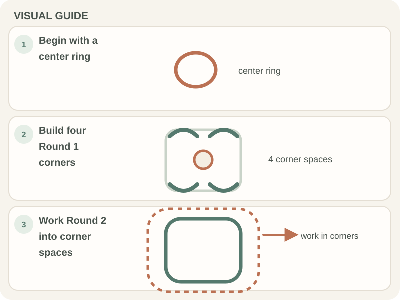

Beginner Projects · Beginner guide
How to Crochet a Beginner-Friendly Granny Square
A classic granny square is built from groups of three double crochets, with chain spaces forming the corners.

This is a common US-style construction; patterns vary in their starting ring, joins, and corner chains. Follow one pattern’s directions consistently.
Before you begin
Use smooth yarn, a matching hook, a stitch marker if helpful, and a tapestry needle for ends. Review the pattern’s abbreviation key before beginning.
Step-by-step instructions
This is one common classic US granny-square start. If you use a pattern, follow its chain-count and joining rules instead.
- Make a magic ring. Chain 3 (counts as one double crochet), then work 2 double crochets into the ring; chain 2.
- Work 3 double crochets into the ring, chain 2, three more times. Join with a slip stitch to the top of the starting chain 3, then tighten the ring.
- For Round 2, slip stitch into a corner space. Chain 3 (counts as one double crochet), work 2 double crochets in that corner, chain 2, then work 3 more double crochets in the same space. Chain 1.
- In each of the three remaining corner spaces, work 3 double crochets, chain 2, and 3 double crochets, then chain 1. Join with a slip stitch to the top of the starting chain 3. For each later round, work the pattern’s 3-double-crochet group in every side chain-1 space and 3 double crochets, chain 2, 3 double crochets in each corner chain-2 space, with chain-1 spaces between groups. Repeat until the square reaches the size you want, following the pattern’s stitch counts.

How to check your work
The square should have four identifiable corners and sides that remain reasonably even. If it cups or ruffles, check the number of stitches and chain spaces before changing your hook.
Common beginner problems
- The center has a hole: Tighten the adjustable ring tail if that is the method used, without pulling the stitches out of shape.
- The square curls: Check that the corner chain spaces and stitch groups match the pattern.
- The edges ruffle: Look for extra stitches or chain spaces; compare each side with the prior round.
Corners and side spaces
Corners usually receive a larger stitch group with a chain space; side spaces receive the pattern’s side group. The exact repeat varies, so use the designer’s stitch count rather than assuming every granny-square pattern is identical.
Frequently asked questions
How do I keep a granny square square?
Count the corners and side groups each round and follow the pattern’s increases.
Does the starting chain count as a stitch?
It depends on the pattern. Check whether it says the chain counts as a double crochet.
Do I have to use a magic ring?
No. Use the center-ring method given by the pattern; a chain ring is another common start.